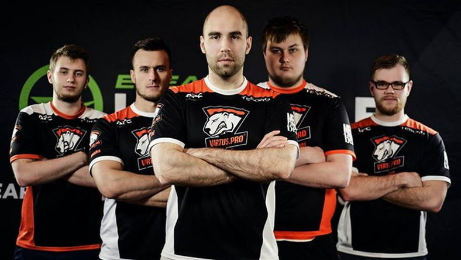

E-sport
Virtus.pro
Rosyjska organizacja e-sportowa założona w 2003 roku. Według danych z 2018 roku składała się z drużyn rywalizujących w następujących grach komputerowych: Counter-Strike: Global Offensive, Dota 2, Paladins oraz Fortnite Battle Royale[3]. W listopadzie 2015 drużyna otrzymała od spółki Aliszera Usmanowa, USM Holdings, ponad 100 milionów dolarów funduszy na dalszy rozwój. W 2016 roku była drugą najlepiej zarabiającą drużyną w grze Counter-Strike: Global Offensive na świecie (801 900 dolarów).
